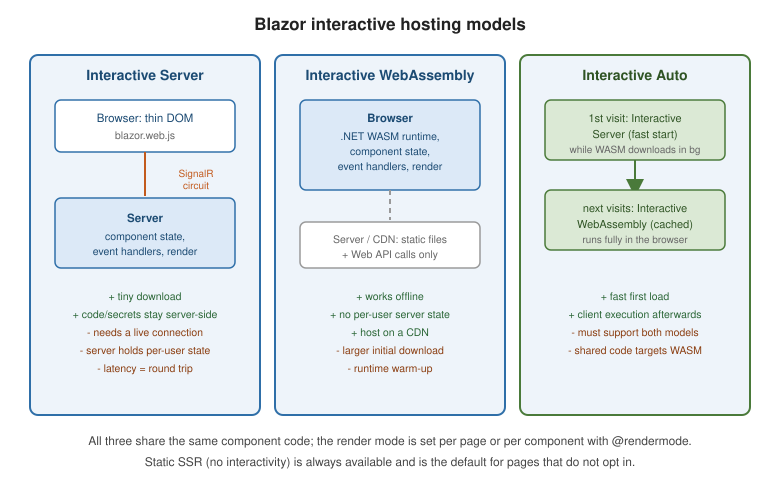

Blazor Overview and Render Modes
|
This content was generated with the assistance of AI and should be verified against the official documentation before being relied on in production. |
Blazor builds interactive web UI from reusable components written in C# and Razor (.razor files) instead of
JavaScript. This page covers what Blazor is and how to choose a render mode; the rest of the cluster covers
components and lifecycle,
data binding and forms,
routing,
state management,
JS interop,
security,
WebAssembly/Hybrid/deployment, and
testing and diagnostics.
What Blazor is
A component is a class (usually authored as Razor markup) that renders a fragment of UI and reacts to events:
@* Counter.razor *@
<button class="btn" @onclick="Increment">Clicked @count times</button>
@code {
private int count;
private void Increment() => count++;
}The Blazor Web App project
dotnet new blazor creates a Blazor Web App: a single ASP.NET Core project with server-side rendering
enabled by default and interactivity opt-in per page or component. Choosing WebAssembly or Auto interactivity
during scaffolding also generates a second project, conventionally named <ProjectName>.Client:
MyApp/ # server project: Program.cs, Components/, server-only services
Components/
App.razor # the root document
Routes.razor # the Router
Layout/MainLayout.razor
Pages/Counter.razor
MyApp.Client/ # compiled to WebAssembly, referenced by MyApp
Program.cs # WebAssemblyHostBuilder for the client-side pieces
Pages/Counter.razor # components that must run on WebAssembly live hereComponents that only ever render on the server can stay in the server project; components that must be able to
run on WebAssembly (Interactive WebAssembly or Auto) belong in the .Client project so they compile to both
targets. See
ASP.NET Core Blazor project structure.
Static SSR, streaming SSR, and enhanced navigation
Static server-side rendering (SSR) renders a component to HTML once per request with no interactivity — the default for a page with no @rendermode. Streaming SSR flushes the initial HTML immediately and
patches in slow-loading sections as their data becomes available, instead of blocking the whole response:
@attribute [StreamRendering]
@if (report is null)
{
<p>Loading...</p>
}
else
{
<ReportView Data="report" />
}
@code {
private Report? report;
protected override async Task OnInitializedAsync() => report = await Reports.BuildAsync();
}Enhanced navigation intercepts same-origin link clicks and form posts with JavaScript, patching the DOM instead of doing a full page reload — it applies to Static SSR pages too, so navigation feels app-like even without any interactive render mode. See Rendering Razor components and Enhanced navigation and form handling.
Interactive render modes
| Mode | How it runs | Good for |
|---|---|---|
Interactive Server |
Events run on the server over a SignalR circuit; DOM diffs pushed to the browser |
Low-latency networks, small download, server-side secrets never leaving the server |
Interactive WebAssembly |
The component runs in the browser on the .NET WASM runtime |
Offline, no per-user server state, CDN hosting |
Interactive Auto |
Starts on Server for a fast first load, switches to WebAssembly once the runtime is cached |
Best of both, at the cost of code that must run correctly under both |
Apply a mode per page, per component, or globally:
@page "/counter"
@rendermode InteractiveServer
@* or applied from a parent to one child instance: *@
<Counter @rendermode="InteractiveWebAssembly" />// Program.cs -- set a default for every component (global interactivity)
app.MapRazorComponents<App>()
.AddInteractiveServerRenderMode()
.AddInteractiveWebAssemblyRenderMode();Standalone Blazor WebAssembly
dotnet new blazorwasm scaffolds a pure client-side app with no ASP.NET Core server component at all — every
page is Interactive WebAssembly, and the compiled output is static files servable from any CDN or static host.
It trades away Static/streaming SSR and server-only secrets for the simplest possible hosting story. See
Blazor WebAssembly, Hybrid, and Deployment.
Prerendering and the double-render trap
Interactive Server and Interactive WebAssembly components are prerendered by default: the framework renders
the component once as static HTML for a fast first paint, then re-renders it a second time once the
interactive runtime (the SignalR circuit or the WASM runtime) attaches. Code that runs in OnInitialized with a
side effect — incrementing a counter in a database, calling a non-idempotent API — runs twice unless guarded:
protected override async Task OnInitializedAsync()
{
if (!RendererInfo.IsInteractive)
{
// this branch runs during prerendering; skip non-idempotent work here
return;
}
await Metrics.RecordViewAsync();
}Disable prerendering for a component that cannot tolerate the double render (@rendermode
"@(new InteractiveServerRenderMode(prerender: false))"), or make the initialization idempotent instead. See
Prerender ASP.NET Core Razor
components.
Choosing a render mode
or avoid per-user server state?"} B -- yes --> C{"Fast first load critical?"} C -- yes --> AUTO["Interactive Auto"] C -- no --> WASM["Interactive WebAssembly"] B -- no --> D{"Low-latency connection
and small download wanted?"} D -- yes --> SRV["Interactive Server"] D -- no --> AUTO

A single Blazor Web App can mix modes per page or component — a marketing page stays Static SSR, a dashboard uses Interactive Server, and an offline-capable tool uses Interactive WebAssembly, all in one project. See ASP.NET Core Blazor render modes.
Deep dive: one product list, three render modes
The same ProductList component behaves differently depending on where it runs, and Interactive Auto is the
mode in which it runs in both places during its life. Following one visitor makes the moving parts concrete.
The consequence is the rule that governs Auto and WebAssembly components: they must not depend on anything that only exists on the server. The component asks for an abstraction, and each side registers its own implementation.
The shared abstraction
// MyApp.Client/Services/IProductService.cs -- compiled into both projects
public sealed record ProductDto(int Id, string Name, decimal Price);
public interface IProductService
{
Task<IReadOnlyList<ProductDto>> GetAllAsync(CancellationToken ct = default);
}
// MyApp.Client/Services/ClientProductService.cs -- runs in the browser, goes over HTTP
public sealed class ClientProductService(HttpClient http) : IProductService
{
public async Task<IReadOnlyList<ProductDto>> GetAllAsync(CancellationToken ct = default) =>
await http.GetFromJsonAsync<List<ProductDto>>("api/products", ct) ?? [];
}
// MyApp/Services/ServerProductService.cs -- runs on the server, goes straight to the database
public sealed class ServerProductService(AppDbContext db) : IProductService
{
public async Task<IReadOnlyList<ProductDto>> GetAllAsync(CancellationToken ct = default) =>
await db.Products.AsNoTracking()
.Select(p => new ProductDto(p.Id, p.Name, p.Price))
.ToListAsync(ct);
}Wiring both hosts
// MyApp/Program.cs (server)
builder.Services.AddRazorComponents()
.AddInteractiveServerComponents()
.AddInteractiveWebAssemblyComponents();
builder.Services.AddScoped<IProductService, ServerProductService>();
var app = builder.Build();
app.UseAntiforgery();
app.MapStaticAssets();
app.MapGet("/api/products", async (IProductService products, CancellationToken ct) =>
await products.GetAllAsync(ct)); // the endpoint the WebAssembly client calls
app.MapRazorComponents<App>()
.AddInteractiveServerRenderMode()
.AddInteractiveWebAssemblyRenderMode()
.AddAdditionalAssemblies(typeof(MyApp.Client._Imports).Assembly);
app.Run();
// MyApp.Client/Program.cs (browser)
var builder = WebAssemblyHostBuilder.CreateDefault(args);
builder.Services.AddScoped(sp => new HttpClient { BaseAddress = new Uri(builder.HostEnvironment.BaseAddress) });
builder.Services.AddScoped<IProductService, ClientProductService>();
await builder.Build().RunAsync();@* MyApp.Client/Pages/ProductList.razor *@
@page "/products"
@rendermode InteractiveAuto
@inject IProductService Products
<p>Rendered by: @RendererInfo.Name (interactive: @RendererInfo.IsInteractive)</p>
@if (items is null)
{
<p>Loading...</p>
}
else
{
<ul>
@foreach (var p in items)
{
<li @key="p.Id">@p.Name: @p.Price.ToString("C")</li>
}
</ul>
}
@code {
private IReadOnlyList<ProductDto>? items;
protected override async Task OnInitializedAsync() => items = await Products.GetAllAsync();
}RendererInfo.Name reports Static while prerendering, then Server or WebAssembly; RendererInfo.IsInteractive
is false until the component has become interactive, and AssignedRenderMode tells a component which mode the
framework chose. Because OnInitializedAsync runs once during prerender and once more when interactivity starts,
this component loads its list twice; the next page of the cluster, Blazor
State Management, shows how [PersistentState] avoids the second fetch.
Pitfalls specific to Auto and WebAssembly
-
Missing registration on one side — a service registered only in the server
Program.cscompiles fine and fails at run time with anInvalidOperationExceptionthe first time the component runs in the browser. -
Server-only APIs in
.Client—DbContext, file-system paths and server secrets belong behind the API endpoint, never in the shared component or the.Clientproject, whose assemblies are downloadable by anyone. -
Auth in the browser — the WebAssembly side calls the same endpoint with the user’s cookie or token, so the endpoint must enforce authorization itself; see Blazor Security.